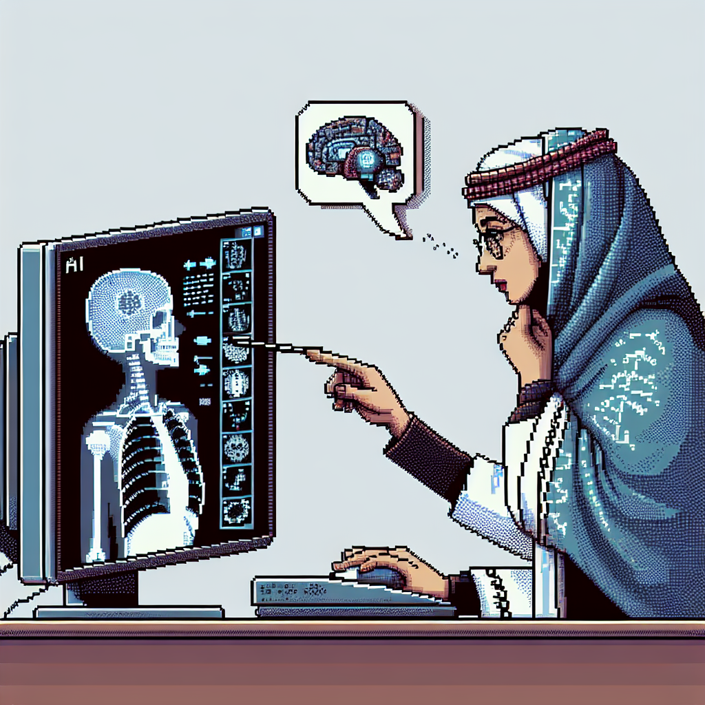

Why AI will never replace the radiologist
Artificial intelligence (AI) has undoubtedly made significant advancements in various fields, including healthcare. Machine learning algorithms have the potential to revolutionize radiology by improving accuracy and efficiency in diagnosing medical images. However, despite these advancements, I firmly believe that AI will never fully replace the radiologist.
One of the primary reasons is the complexity of radiology. While machine learning algorithms are incredibly powerful in analyzing large datasets and identifying patterns, they still lack the ability to understand the context and nuances that radiologists possess. Radiologists not only interpret images but also consider the patient's medical history, symptoms, and other relevant factors. They can make connections and draw conclusions based on their extensive knowledge and experience, something that AI algorithms currently struggle with.
Another crucial aspect is the human touch. Radiologists not only provide accurate diagnoses but also offer compassionate care to patients. They interact with patients, explain medical conditions, and provide emotional support during challenging times. The empathetic connection that radiologists establish with their patients cannot be replicated by AI, as it lacks human emotions and understanding.
Moreover, radiologists are continually updating their knowledge and skills to keep up with the latest advancements in medical imaging. They attend conferences, participate in research, and collaborate with other experts. This continuous learning allows them to stay at the forefront of their field and provide the best possible care to their patients. While AI algorithms can learn from large datasets, they are limited by the data they are trained on. They cannot adapt and learn in real-time like radiologists do.
Additionally, the implementation of AI in radiology raises concerns about patient privacy and data security. Medical images contain sensitive patient information that needs to be handled with utmost care. Radiologists are well-versed in patient confidentiality and adhere to strict privacy protocols. However, AI algorithms may pose potential risks if not carefully regulated and protected.
In conclusion, while AI has immense potential in revolutionizing radiology, it will never completely replace the essential role of the radiologist. The combination of human expertise, empathy, and adaptability will always be necessary in providing the best possible care to patients. Radiologists and AI can work together synergistically, with AI assisting radiologists in analyzing and interpreting medical images, ultimately enhancing the accuracy and efficiency of diagnoses.